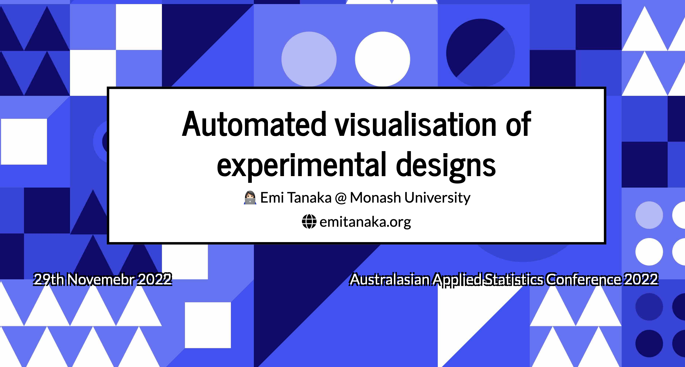
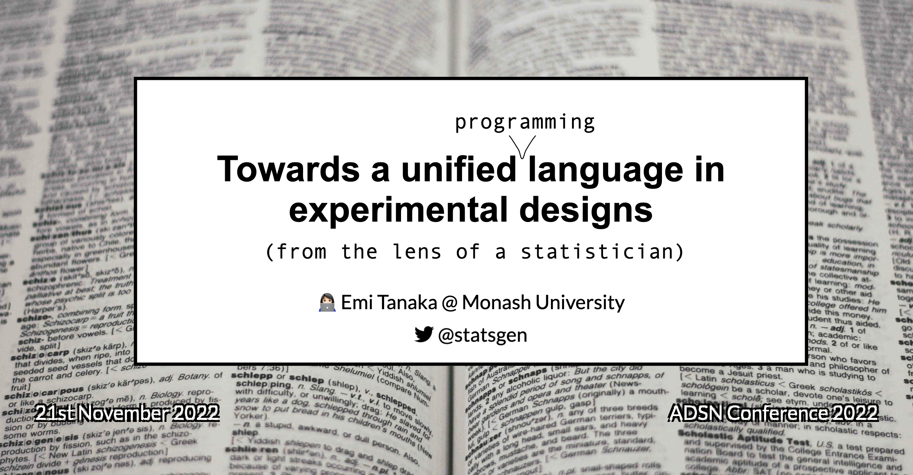
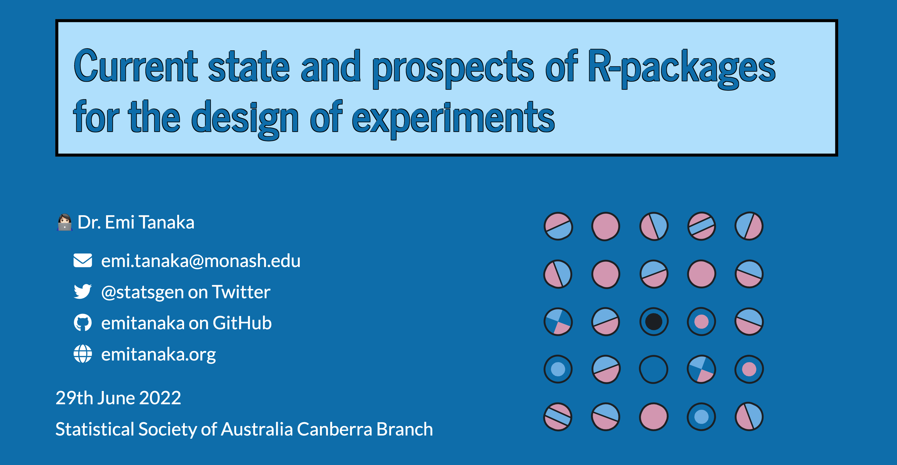
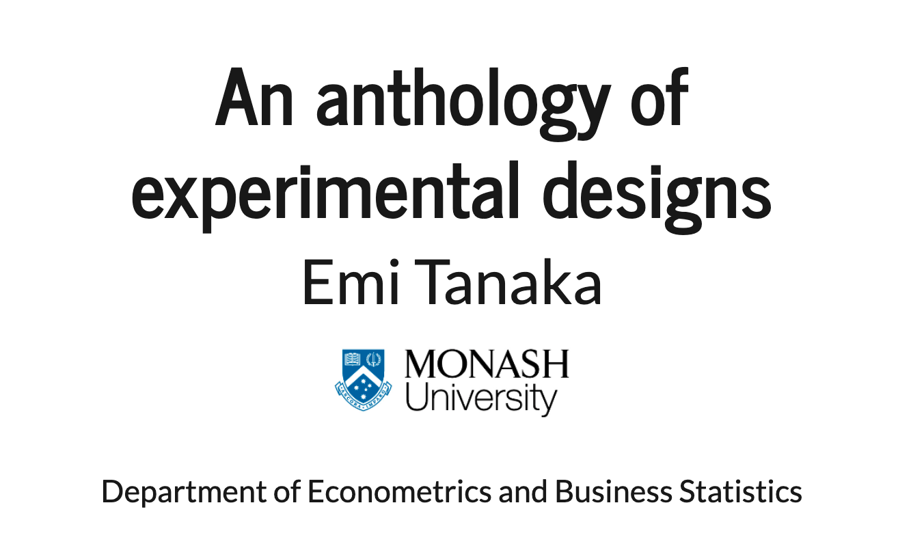
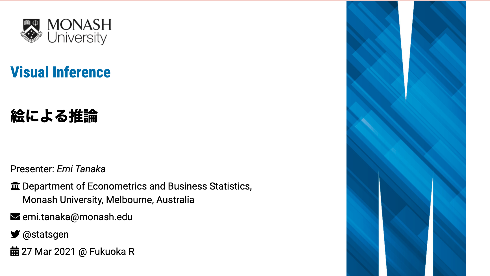
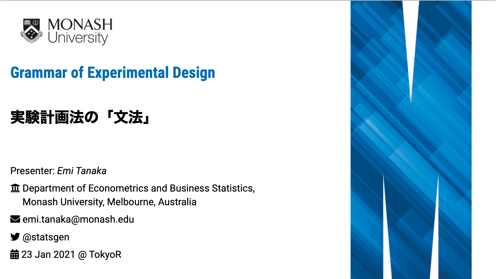
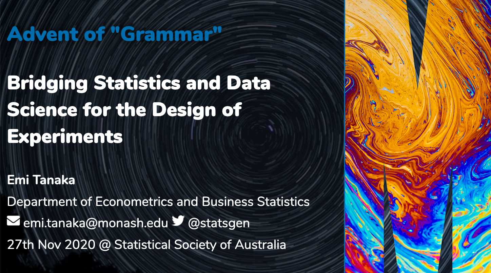
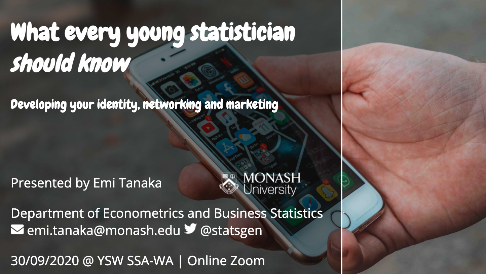
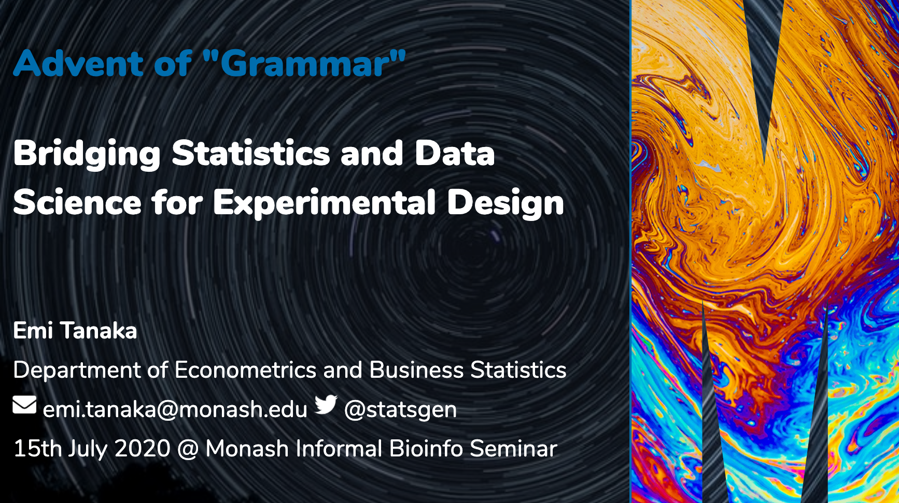

emi tanaka
Home
CV
Research
Teaching
Talks
Blog
About
Talks
Categories
All
(13)
Experimental Design
(8)
Latent Variable Model
(1)
Mixed Model
(1)
Service
(1)
Skill
(1)
Visual Inference
(1)
Visualisation
(1)
日本語
(2)

Automated visualisation of experimental designs
Experimental Design
Visualisation
Nov 29, 2022
Host
Australasian Applied Statistics Conference 2022

Towards an unified language in experimental designs
Experimental Design
Nov 21, 2022
Host
Australian Data Science Network Inaugral Conference
The genesis of experimentation
Experimental Design
Jul 28, 2022
Host
Ihaka lecture 2022 series

Current state and prospects of R-packages for the design of experiments
Experimental Design
Jun 29, 2022
Host
Statistical Society of Australia Canberra Branch

An anthology of experimental designs
Experimental Design
Mar 24, 2022
Host
Toronto Data Workshop
Constructing and visualising experimental designs with the edibble R-package
Experimental Design
May 20, 2021
Host
Queensland Department of Agriculture and Fisheries Biometry Workshop

Visual Inference: 絵による推論
日本語
Visual Inference
Mar 27, 2021
Host
17th Fukuoka R Meeting.

Grammar of Experimental Design: 実験計画法の「文法」
日本語
Experimental Design
Jan 23, 2021
Host
89th Tokyo R Meeting.

Advent of “Grammar”: Bridging Statistics and Data Science for the Design of Experiments
Experimental Design
Nov 27, 2020
Host
Statistical Society of Australia Webinar Series

What every young statistician should know: Developing your identity, networking and marketing
Sep 30, 2020
Host
Young Statistician Workshop for the Statistical Society of Australia Western Australia Branch

Advent of “Grammar”: Bridging Statistics and Data Science for Experimental Design
Jul 15, 2020
Host
Monash Bioinformatics Seminar
Beyond Beamer: Modern and Dynamic Presentations with R Markdown
Skill
Service
Jun 30, 2020
Host
Statistical Society of Australia NSW, Canberra Branches, R-Ladies Canberra, R-Ladies Sydney.
Software design, selection and estimation for latent variable models
Latent Variable Model
Mixed Model
Nov 29, 2019
Host
WOMBAT 2019.
No matching items